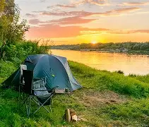

Camping is a form of outdoor recreation or outdoor education involving overnight stays with a basic temporary shelter such as a tent. Camping can also include a recreational vehicle, sheltered cabins, a permanent tent, a shelter such as a bivy or tarp, hammock, or no shelter at all. Typically, participants leave developed areas to spend time outdoors, in pursuit of activities providing them enjoyment or in a form of educational experience. Spending the night away from home distinguishes camping from day-tripping, picnicking, and other outdoor activities.
